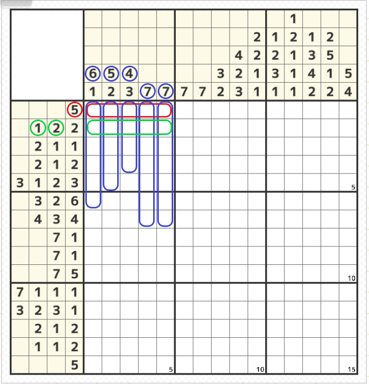
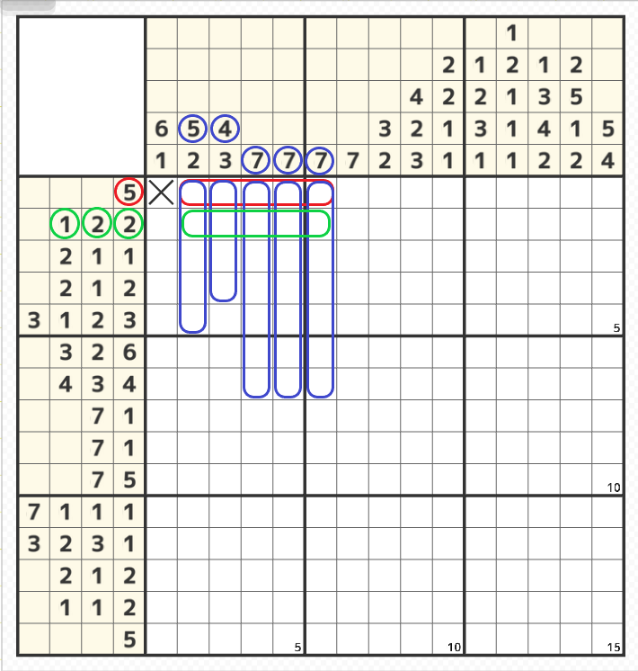
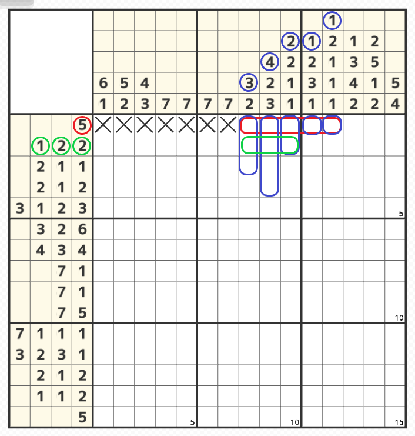
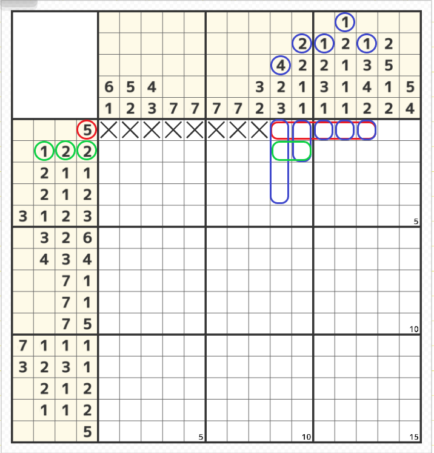
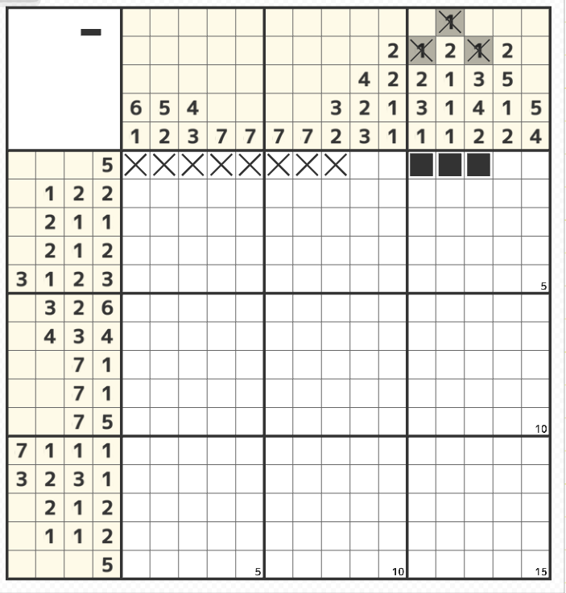

塗れるところがないときは「✖」をつけられる場所を探す

- ステージによっては空白の範囲が広く、またヒントの数字が少なくて最初からどこにも塗ることができない場合もある（上図は早いステージなので探せばあるが）
その場合、空白の確定場所を探して「×」をつけていく。
縦と横のヒントを同時に考えるので慣れるまでは難しいが、このテクニックを使う場面はかなり少ない。
上図の左側の1行目のヒントの「5」が仮に1番左に入った場合（赤線部分）、上側のヒントの6，5，4，7，7（青線部分）が下に強制的に連なって塗られることになる。すると2行目のヒント（緑線部分）が1，2，2であって「5」ではないため成立しない。
よって1行目1列目（1-1）は「×」が確定する。

- 続けて×の右隣に同じように1行目のヒントの「5」を仮に入れた場合（赤線部分）、上側のヒントが5，4，7，7，7（青線部分）でまた2行目が5マス塗られてしまい2行目のヒントの1，2，2と成立しないので1-2も「×」が確定する

- 同様に1-3、1-4…と続けていくと「×」が入り、上のヒントの上の数字に「1」が続けて出てこないと2行目の1，2，2の条件にならないことがわかる
上図も上側のヒントが3，4，2，1，1（青線部分）で2行目が3個連なってしまうのでまだ成立しないことがわかる。

- 上図の位置で赤線部分に仮に「5」が入った場合、上側のヒントが4，2，1，1，1で、やっと2行目に「2」が入って成立する可能性があるということがわかる。
これで1-9の箇所に「×」をつけることができないということもわかる。

- このように少ないヒントから「×」の確定箇所を探すのは難しいので、メダルが溜まっていればヒントメニューを使うのもあり